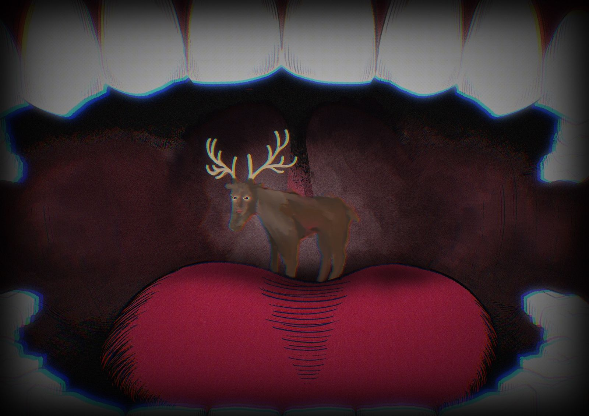

Experimental animation
Kaze
The story begins with a boy eating food that has fallen to the ground. Unaware that it is contaminated, bacteria enter his body and gradually spread through his organs, eventually reaching his heart and taking his life.
As this invisible invasion unfolds, the music shifts from quiet and calm to intense and overwhelming, reflecting the growing tension. The piece explores how small, careless actions can lead to unseen and irreversible consequences.
- Type
Individual project / first digital animation - Software
Procreate / Adobe After Effects / GarageBand - Year
2023 - Duration
15 seconds

Watch on YouTube ↗Process
Early visual development
Concept drawings and visual experiments used while building the short animation.